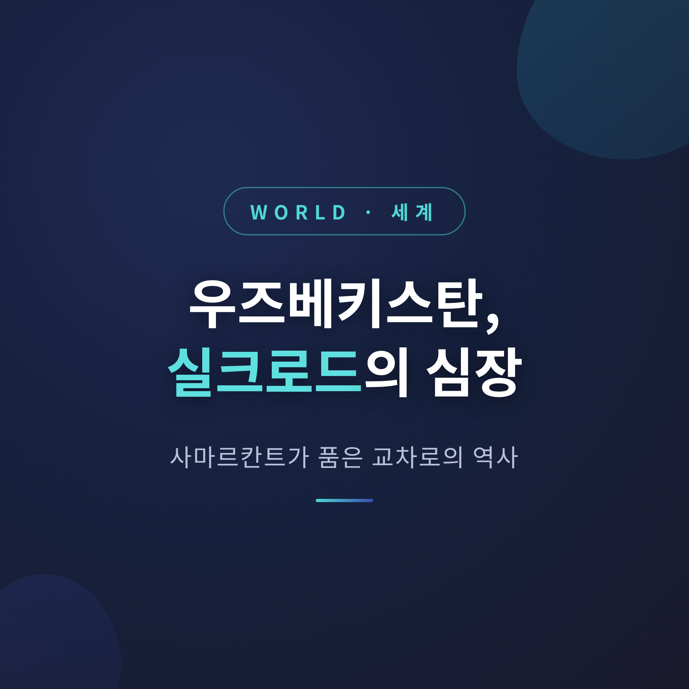
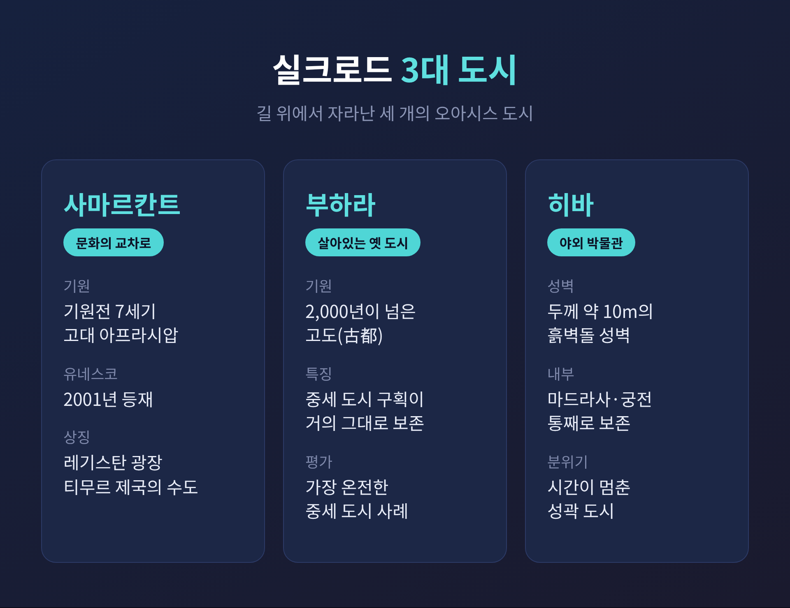
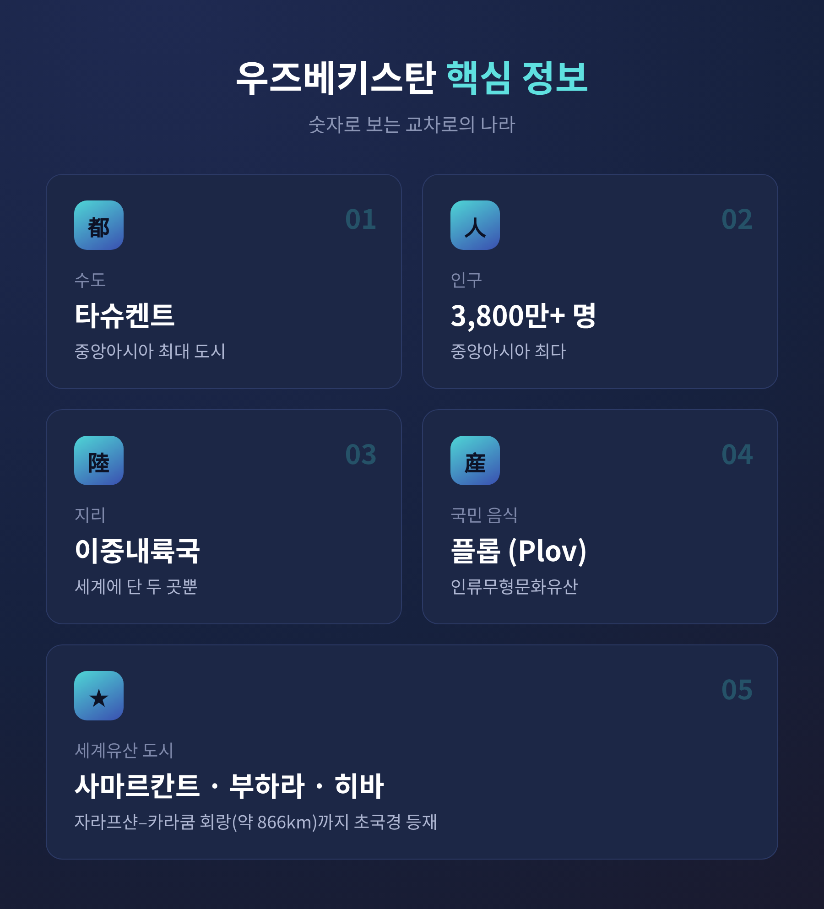

[세계] 우즈베키스탄, 실크로드의 심장 사마르칸트가 품은 교차로의 역사
이번 글에서는 우즈베키스탄을 정리해 보겠습니다. 실크로드의 한복판에 자리한 이 나라가 어떤 땅을 딛고, 어떤 역사를 거쳐, 오늘 어디로 향하는지 살펴봅니다. 결론을 먼저 말씀드리면, 우즈베키스탄은 비단이 아니라 사람과 생각이 오간 '교차로의 나라'입니다.

바다에서 가장 먼 나라
우즈베키스탄은 중앙아시아 내륙에 있습니다. 카자흐스탄, 키르기스스탄, 타지키스탄, 아프가니스탄, 투르크메니스탄과 국경을 맞댑니다.
이 나라에는 보기 드문 지리적 별칭이 있습니다. '이중내륙국'입니다. 자국이 내륙국일 뿐 아니라, 국경을 맞댄 모든 이웃이 다시 내륙국입니다. 바다에 닿으려면 최소 두 나라를 건너야 합니다. 세계에서 이런 곳은 우즈베키스탄과 리히텐슈타인, 단 두 곳뿐입니다.
수도는 타슈켄트입니다. 중앙아시아 최대 도시이자 경제와 문화의 중심입니다. 인구는 3,800만 명을 넘어, 중앙아시아에서 가장 많습니다. 국토의 약 80%는 평지와 사막이지만, 아무다리야와 시르다리야 두 강이 이 땅의 농업을 떠받칩니다.
사마르칸트, 부하라, 히바 — 길 위의 세 도시
실크로드는 하나의 길이 아니었습니다. 동서를 잇는 길들의 그물망이었습니다. 우즈베키스탄의 오아시스 도시들은 그 그물의 핵심 매듭이었습니다.
사마르칸트는 "문화의 교차로"라는 이름으로 2001년 유네스코 세계유산에 올랐습니다. 기원전 7세기 고대 아프라시압에서 출발한, 가장 오래 사람이 살아온 도시 중 하나입니다. 부하라는 2,000년이 넘은 도시로, 중세 도시 구획이 거의 그대로 남은 가장 온전한 사례로 꼽힙니다. 히바는 두께 약 10m의 흙벽돌 성벽 안에 마드라사와 궁전이 통째로 보존된 '야외 박물관'입니다.

이 세 도시뿐이 아닙니다. '자라프샨–카라쿰 회랑'은 타지키스탄·투르크메니스탄·우즈베키스탄에 걸친 약 866km의 초국경 세계유산으로 등재되었습니다. 기념물 하나가 아니라 '길의 네트워크' 자체가 인정받은 셈입니다.
정복자의 도시, 천문학자의 하늘
사마르칸트의 전성기는 14~15세기 티무르 제국기였습니다. 티무르는 튀르크-몽골계 정복자였습니다. 잔혹한 정복자로 알려졌지만, 동시에 예술의 후원자이기도 했습니다. 그는 사마르칸트를 제국의 중심 도시로 키웠습니다.
그의 손자 울루그베그는 결이 달랐습니다. 무력보다 학문에 마음을 두었습니다. 1428년경, 그는 사마르칸트에 지름 40m가 넘는 거대한 육분의를 갖춘 천문대를 세웠습니다. 중세 세계 최대 규모였습니다.
여기서 관측한 별 목록 『지즈이술타니』는 프톨레마이오스의 값을 개선한 성과로 평가됩니다. 그 정확도는 17세기 망원경이 등장하기 전까지 깨지지 않았습니다. 칼을 든 할아버지와 별을 헤아린 손자 — 한 가문의 두 얼굴이 이 도시에 함께 새겨져 있습니다.
푸른 돔, 그리고 식탁의 인심
레기스탄 광장은 사마르칸트의 심장입니다. 영국의 커즌 경이 "세계에서 가장 고귀한 공공 광장"이라 부른 곳입니다. 세 개의 마드라사가 광장을 둘러쌉니다. 터키석빛 돔과 기하학 문양, 화려한 모자이크 타일은 흔히 '블루의 교향곡'으로 불립니다.
건축이 눈을 사로잡는다면, 식탁은 마음을 붙듭니다. 국민 음식 플롭은 쌀에 양고기와 당근, 양파를 넣어 큰 무쇠솥에 짓는 요리입니다. 결혼식부터 추모식까지 거의 모든 자리에 오르며, 유네스코 인류무형문화유산에도 올랐습니다. 손님에게 가장 먼저 차를 권하고, 작은 사발에 조금씩 자주 따라 주는 것이 정성을 표하는 방식입니다.
이 땅은 사람만 길러낸 것이 아니라 지식도 길러냈습니다. '대수학의 아버지' 알콰리즈미, '근대 의학의 아버지'로 불리는 이븐 시나가 이 지역과 깊은 연을 맺었습니다. '알고리즘'이라는 말이 알콰리즈미의 이름에서 나왔다는 사실은 늘 곱씹게 됩니다.

닫혔던 문, 다시 열리는 길
우즈베키스탄은 1991년 8월 31일 독립을 선언했습니다. 이후 오랫동안 비교적 고립된 길을 걸었습니다.
그늘도 있었습니다. 1960년대부터 소련이 면화 생산을 위해 두 강의 물을 대규모로 돌리면서, 아랄해가 급격히 말랐습니다. 수면적은 한때의 약 10분의 1로 줄었고, 염분과 먼지 폭풍은 보건 위기를 불렀습니다. "세계 최악의 환경 재앙" 중 하나로 불리는 상처입니다. 다만 최근에는 복원과 완화의 노력이 이어지고 있습니다.
예전엔 환율조차 묶여 있던 닫힌 경제였습니다. 지금은 다릅니다. 2016년 이후 개혁이 잇따랐고, 2017년 통화 자유화로 교역과 투자의 길이 풀렸습니다. 사마르칸트와 부하라를 찾는 여행자가 늘면서 관광이 성장 동력으로 떠올랐습니다. 아직 완전하다고 말하기는 어렵습니다. 그래도 방향은 분명합니다.
정리하면 이렇습니다. 우즈베키스탄을 한 줄로 줄이면, "비단이 아니라 사람이 오간 교차로"입니다.
길은 물건만 나르지 않았습니다. 별을 헤아리는 법과 손님에게 차를 따르는 마음까지 함께 날랐습니다. 그 길의 매듭에 언젠가 직접 서 보고 싶으냐고 물으신다면, 망설임 없이 그렇다고 답하겠습니다.